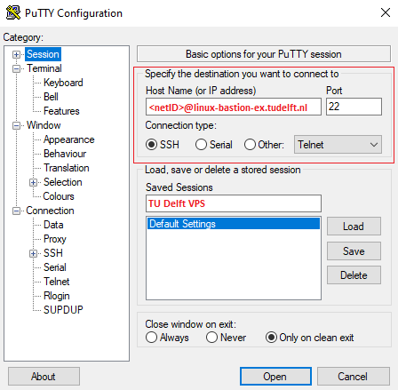
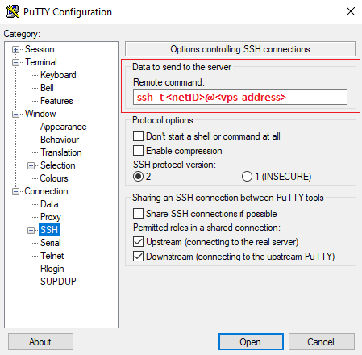

Connecting to remote servers
This guide provides instructions for establishing a secure connection to your TU Delft Virtual Private Server (VPS). Connection methods vary based on your local operating system and whether your remote server runs Windows or Linux.
Before you begin, ensure you have the following:
- A valid TU Delft NetID.
- Access to a TU Delft VPS. If you do not have one, follow our VPS Request guide to request a new server. To access a server owned by a colleague, the owner must contact ICT to grant you permission.
- An SSH or RDP client application. More details are provided below.
Connecting to a Windows server
The standard method for connecting to a Windows VPS is through a Remote Desktop Protocol (RDP) connection. An RDP connection allows you to access the remote machine using a visual “desktop” environment, where you can use your mouse and keyboard just as you would on your local computer.
To establish this connection, you require a Remote Desktop client on your local computer. The tool you will use depends on your local operating system:
- Windows: use the built-in Remote Desktop Connection (MSTSC) application and follow the RDP Manual for Windows.
- macOS: download and install the Windows App from the Mac App Store and follow the RDP Manual for MacOS.
- Linux: download and install the Remmina client and follow the RDP Manual for Linux.
Connecting to a Linux server
The standard method for connecting to a Linux VPS is through a Secure Shell (SSH) connection. This creates an encrypted “tunnel” between your computer and the server, allowing you to type commands directly into the remote machine.
To establish this connection, you require an SSH client on your local computer. The tool you will use depends on the operating system of your local computer:
- macOS and Linux: You do not need to install additional software. You can use the built-in Terminal application already available on your system.
- Windows: While modern Windows versions include basic SSH support via cmd or PowerShell, it is often more user-friendly to use a dedicated application. We recommend PuTTY. Alternatively, you may use the Windows Subsystem for Linux (WSL).
Connecting to a TU Delft Linux VPS requires first accessing a Bastion Host (an intermediary server controlling access). VPS can be accessed by two types of bastion hosts: linux-bastion-ex.tudelft.nl which provides a local /home directory, and linux-bastion.tudelft.nl which provides access to your central university /home directory. In this sense, linux-bastion-ex.tudelft.nl is a more secure option and recommended for the steps below.
Access from the bastion to your VPS is via SSH keys. When you request a Linux VPS, ICT pre-configures SSH keys between linux-bastion-ex.tudelft.nl and your new VPS. This means that once you are on the bastion, you can connect to your VPS using ssh
Connecting from Linux, macOS or the WSL
To connect to your VPS, open the terminal and enter the following command:
ssh -t <netID>@linux-bastion-ex.tudelft.nl "ssh <netID>@<vps-address>"This command will first connect you to the bastion host and then immediately initiate a second SSH connection to your VPS. You will be prompted to enter your TU Delft netID password to connect to the bastion. Because ICT has already configured the SSH keys between the bastion and your VPS, the bastion will use this key to log you in directly to your VPS.
SSH Tunneling
While the command above is useful for quick terminal access, SSH tunneling streamlines the connection by creating a direct path to your VPS. Once configured, you won’t need to manually pass through the bastion every time; your local computer will handle the “jump” in the background. This is specially helpful for simplified data transfers via the scp command.
1. Create SSH keys
If you do not have an SSH key-pair, create one on the local machine. Open the terminal and enter the following command. Replace <my-keyname> with a name of your choice for the SSH key, e.g., id_rsa or id_ed25519.
$ ssh-keygen -t ed25519 -f ~/.ssh/<my-keyname>You will be prompted to create a passphrase. We recommend you to add one to make the connection more secure. The passphrase will be requested every time you connect to the VPS. To skip the passphrase, press Enter when prompted. You should see something like this:
Generating public/private ed25519 key pair.
Enter passphrase for "ed25519" (empty for no passphrase):
Enter same passphrase again:
Your identification has been saved in ~/.ssh/<my-keyname>
Your public key has been saved in ~/.ssh/<my-keyname>.pub
The key fingerprint is:
SHA256:6j06srvun06gJ5UCmD+MVq6RsPuytCO5mF4hTELnWTg root@local-machine
The key's randomart image is:
+--[ED25519 256]--+
<image cut for security reasons>
+----[SHA256]-----+A private and public key pair will be created in ~/.ssh.
The public key is the file with the .pub extension, e.g., <my-keyname>.pub
2. Copy SSH keys to bastion host and remote server
You must “authorize” your key on both the bastion and your VPS. The easiest way to do this is using the ssh-copy-id command:
# First, authorize the key in the bastion host
ssh-copy-id -i ~/.ssh/<my-keyname>.pub <netID>@linux-bastion-ex.tudelft.nl
# Second, authorize the key on your VPS:
# 1. Copy the key to the bastion
scp ~/.ssh/<my-keyname>.pub <netID>@linux-bastion-ex.tudelft.nl:~/localkey.pub
# 2. Connect to the bastion
ssh <netID>@linux-bastion-ex.tudelft.nl
# 3. Authorize key on the VPS
ssh-copy-id -f -i ~/localkey.pub <netID>@<vps-address>
# 4. Delete temporary file and logout from the bastion
rm ~/localkey.pub
logoutYou will be prompted to enter your TU Delft netID password during both steps.
3. Create a new host for SSH connection
On your local machine, edit the ~/.ssh/config file and add the following configuration. If the file does not exist, create it.
Host <host-nickname>
HostName <target-host>
User <target-username>
ProxyJump <bastion-username>@linux-bastion-ex.tudelft.nl
IdentityFile ~/.ssh/<my-keyname>Replace:
<host-nickname>: a name of your choice for the target host, e.g.,my-server.<target-host>: the actual name of the target host (FQDN), e.g.,server.tudelft.nl.<target-username>: the username used to log in to the target host, usually your NetID.<bastion-username>: the username used to log in to the bastion server (often same as NetID, but keep separate in case it differs).<my-keyname>: the name of the SSH private key you created, e.g.,id_rsa. If your private key is stored in a different location, replace the path accordingly.
4. Test the SSH tunneling connection
Connect to the VPS using SSH tunneling by typing the command below. Use your bastion-password when asked. This is usually the password associated with your NetID.
$ ssh <host-nickname>If you encounter problems with the connection, use the debug mode ssh -vvv <host-nickname> to find out what might have gone wrong. This command will provide detailed information about the connection process and can help you troubleshoot any issues.
Connecting from Windows
Connecting to your Linux VPS from Windows can be easily done using PuTTY. The intermediate connection to the bastion is handled via a “remote command”. This setup allows you to authenticate once with the bastion and land directly in your VPS.
1. Configure the Bastion connection
To start, open PuTTY and enter the connection details for the Bastion Host:
- Host Name:
<netID>@linux-bastion-ex.tudelft.nl - Port:
22 - Connection type:
SSH

2. Configure automatic login to your VPS
In the left-hand sidebar, navigate to “Connection > SSH”. Locate the “Remote command” text box and enter ssh -t <netID>@<vps-address>. With this configuration, PuTTY first connects to the bastion host and then automatically starts an SSH session to your VPS.

3. Optional: save the session
Save the session details to avoid re-entering these settings each time you connect to your VPS. To do so, navigate back to “Session” on the left-hand sidebar and enter a name under “Saved Sessions”, for example “TU Delft VPS”. Click Save.
4. Connect
Click “Open” at the bottom of the window to start the connection. You will be prompted for your TU Delft password. The first time you connect you may see a host key warning. Verify the host and accept it to continue.